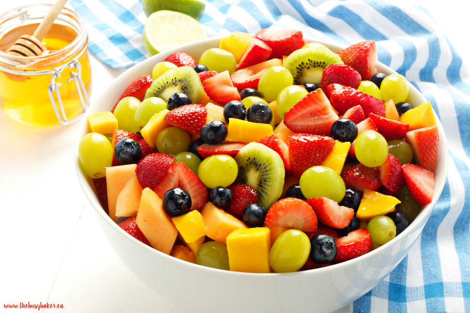

Fruit Salad Recipe
by Mallory Michaud
- Preparation Time:
- Serving Size:
- 3-5 people

Artist: Mallory Michaud
Ingredients Needed
- ¼-Cup fresh-squeezed orange juice
- ¼-Cup of raw honey
- Lemon zest
- 2-Cups strawberries, sliced
- 4-oz. Raspberries
- 4-oz. Blueberries
- 3-Kiwi fruit, peeled and sliced
- 1-Orange, peeled and wedges cut in half
- 2-Apples, peeled and sliced
- 1-Mango, peeled, pitted and chopped
- 2-Cups red grapes
Preparation Steps
- Mix the orange juice, raw honey, and lemon zest in a small bowl until evenly mixed.
- Gather fruits, wash and slice if needed as directed in the ingredient list.
- Pour all of the prepped fruits into a large bowl.
- Pour the liquid mixture from the small bowl into the larger bowl of fruits.
- Mix fruits and liquid mixture until the fruits and liquid are evenly distrubted in the bowl.
- Distribute fruit salad into seperate serving bowls.
- Add whipped cream and/or powdered sugar on top for extra sweetness!
- Serve and enjoy! Refridgerate leftovers.
Back to main content